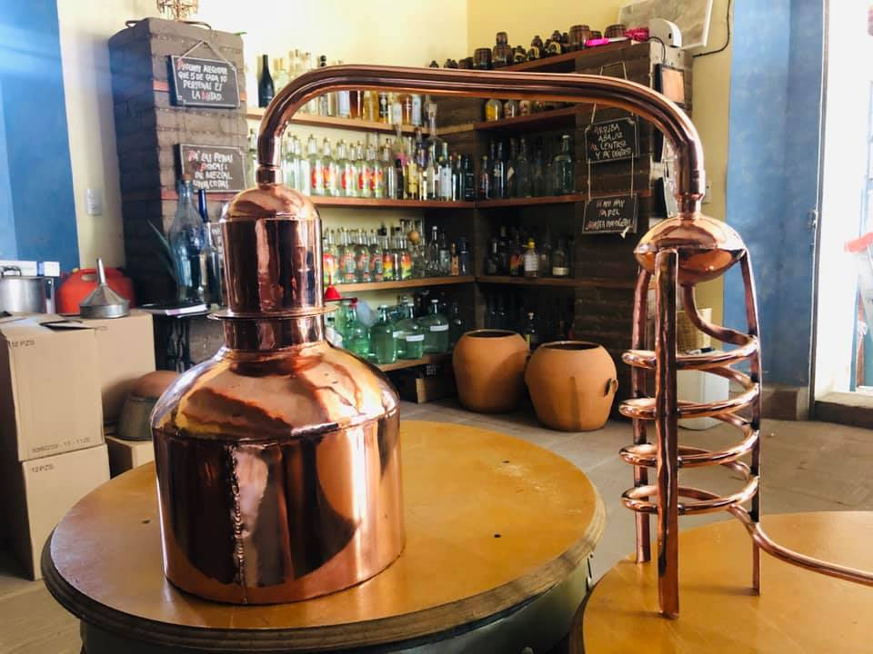
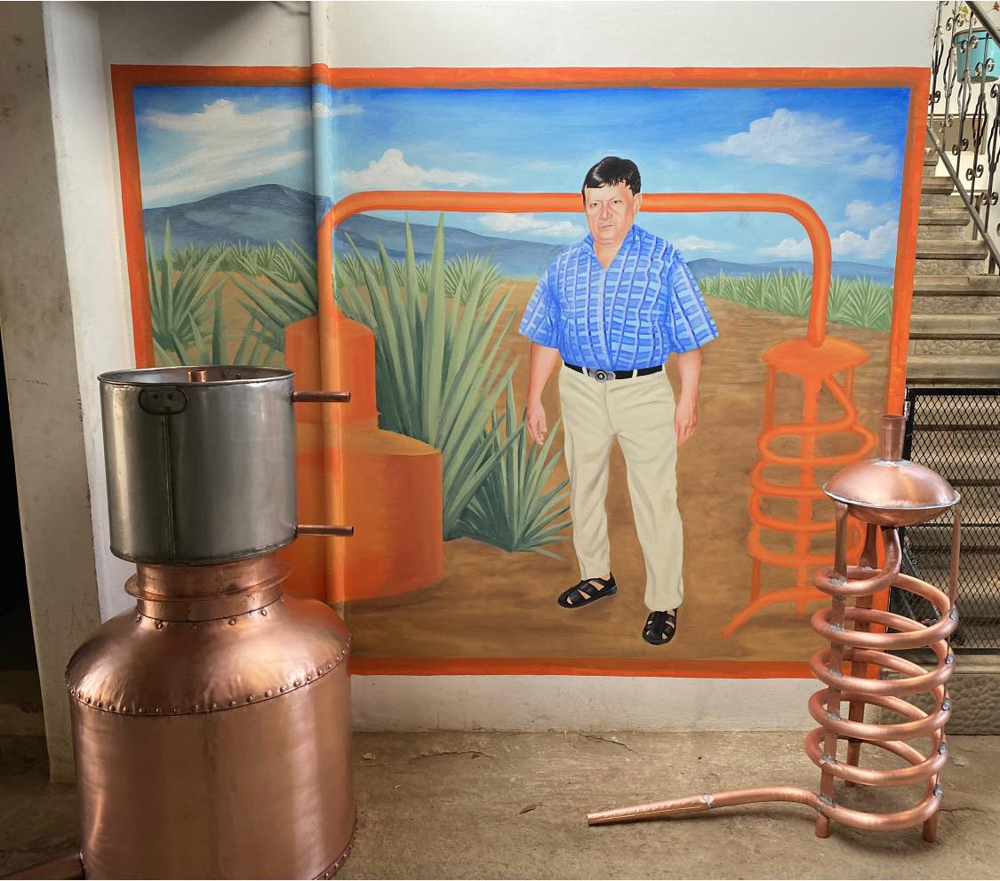
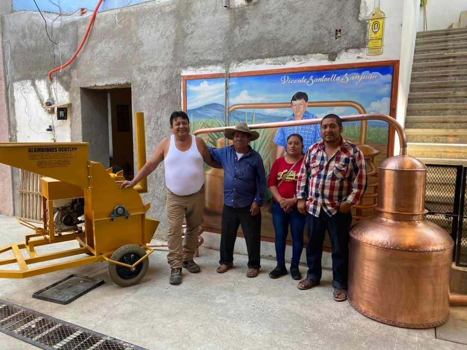
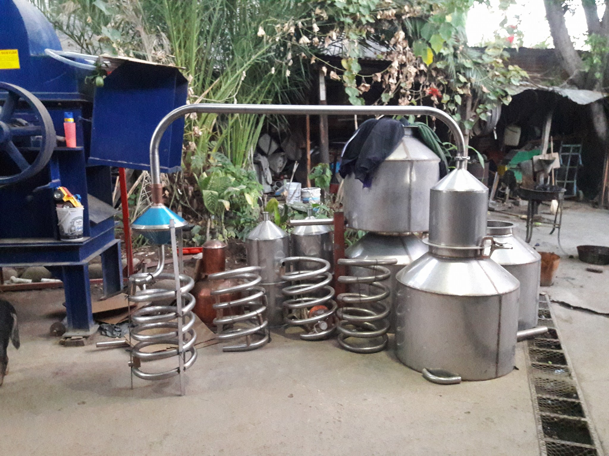
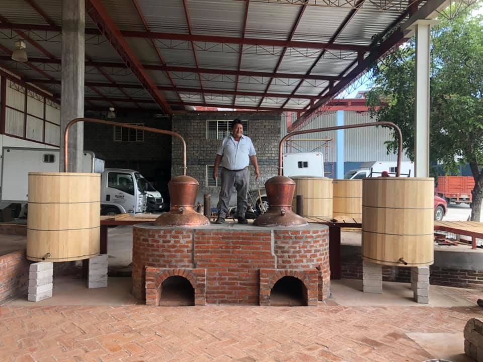

Ocotlán de Morelos, Oaxaca
Fabricación de equipos especializados para la industria del mezcal con el respaldo de cuatro generaciones de experiencia heredada.

En el corazón de Oaxaca, en Ocotlán de Morelos, nace la esencia de una tradición que ha trascendido generaciones. Alambiques Santaella es el resultado de más de cuatro generaciones dedicadas con pasión a la elaboración de herramientas y equipos para la industria del mezcal.
Nuestra historia comienza con manos expertas que, guiadas por el conocimiento ancestral, dieron forma a los primeros alambiques de manera completamente artesanal. Con el paso del tiempo, este saber se ha perfeccionado, manteniendo siempre el respeto por las técnicas tradicionales.
Hoy, Alambiques Santaella es más que una empresa familiar: es un legado vivo. Cada pieza que elaboramos lleva consigo la experiencia, el compromiso y el orgullo de quienes han dedicado su vida a este oficio.
Crear y ofrecer alambiques y soluciones integrales para la industria del mezcal, elaborados de manera artesanal y con los más altos estándares de calidad, preservando las técnicas tradicionales. Nos comprometemos a acompañar a productores mezcaleros brindando productos duraderos y eficientes.
Ser una empresa líder a nivel nacional e internacional en la fabricación artesanal de alambiques y equipamiento para la industria del mezcal, reconocida por su calidad, innovación y respeto por la tradición. Aspiramos a seguir creciendo fortaleciendo el legado familiar.

Los pilares que sostienen nuestro legado y definen cada pieza que fabricamos en Alambiques Santaella.
Honramos el conocimiento heredado por cuatro generaciones, preservando técnicas artesanales.
Precisión y materiales de alto nivel para garantizar productos duraderos a los maestros mezcaleros.
Dedicación, paciencia y orgullo en un trabajo artesanal que trasciende el tiempo.
Acompañamos a los productores ofreciendo soluciones confiables y asesoría con experiencia.
Integramos mejoras que optimizan nuestros productos respetando siempre la tradición.
Protegemos el legado mezcalero. Cada alambique es un símbolo de la cultura de Oaxaca.
Empresa construida sobre la unión y el esfuerzo compartido como base de crecimiento.
Actuamos con ética y respeto hacia nuestros clientes para generar impacto positivo.

Ofrecemos una gama completa de productos y soluciones diseñadas para fortalecer cada etapa del proceso mezcalero. En Alambiques Santaella, no solo ofrecemos productos, sino soluciones integrales respaldadas por tradición y conocimiento para responder a las necesidades reales de los productores.
Solicitar CotizaciónElaboramos alambiques de cobre y acero inoxidable de alta calidad, fabricados de manera artesanal para garantizar durabilidad y eficiencia.
Desgarradoras de gasolina y eléctricas, tinas de fermentación, barricas de roble y lavadoras de botellas, además de insumos esenciales.
Diseñamos hornos tipo mampostería para el cocimiento de las piñas, cuidando cada detalle para lograr procesos óptimos y resultados de excelencia.
Brindamos asesoría en el uso, instalación y aprovechamiento de cada equipo, acompañando a nuestros clientes para obtener el máximo rendimiento.
No importa en qué parte del país te encuentres, en Alambiques Santaella garantizamos envíos seguros y eficientes a toda la República Mexicana. Tu equipo llegará en perfectas condiciones, listo para fortalecer tu producción mezcalera.

Cada equipo es una obra maestra de ingeniería tradicional diseñada para durar.